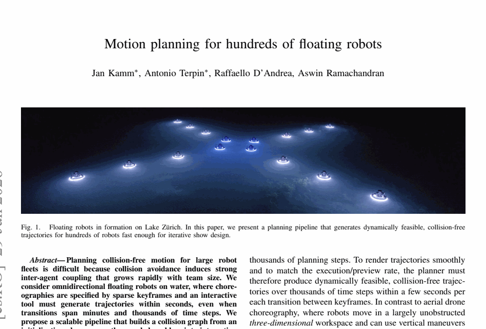

| Title | Motion planning for hundreds of floating robots |
| Authors | Jan Kamm*, Antonio Terpin*, Raffaello D'Andrea, Aswin Ramachandran (* equal contribution) |
| Affiliation | ETH Zurich (Institute for Dynamic Systems and Control) |
| Venue | 2026 (preprint / technical report) |
| Paper ID | 10345 |
| Source File | Kamm et al. - 2026 - Motion planning for hundreds of floating robots.pdf |
| Domain | Multi-Robot Motion Planning / Trajectory Optimization / Show Robotics |
| Platform | Way of Water — floating robotic crafts operating on water surface |
| Scale | Up to N = 500 robots, K = 1000 time steps, safety radius R = 0.8 m |
| Deployment | Lake Zurich (24 crafts) and Time Space Existence 2025 Venice Biennale |
A: 对于数百台水面机器人的协同运动规划，传统 SCP 方法的碰撞约束数量随机器人数量 平方增长 (O(N^2K))，直接求解一个包含所有碰撞约束的全局优化问题在计算上不可行。本文的核心洞察是：先通过快速初始化生成近似轨迹，再基于 KD-tree 构建稀疏碰撞图 (collision graph)，将全局问题解耦为多个独立的子问题集群 (clusters)，每个集群内部的 SCP 优化规模远小于全局问题。这使得整个 Pipeline 可以在几秒内为 500 台机器人、1000 个时间步生成光滑、动态可行的无碰轨迹。
A: 水面机器人被约束在 2D 曲面 上运动，无法像 3D 无人机那样利用高度维度进行避碰——所有碰撞约束在 2D 平面上 更密集、更耦合。而且水面平台使用简化的平动动力学模型 (simplified translational model)，在下层由 MPC 跟踪，这就要求规划器生成的轨迹必须是动态可行的 (dynamically feasible)，即可以被低层控制器以厘米级精度跟踪。
| 来源 / 灵感 | 原始形式 | 本文转化后的洞察 |
|---|---|---|
| SCP (TrajOpt 传统) | Schulman 等人 [5,6] 将 SCP 用于单机时间最优轨迹和编队飞行——每次迭代求解完整 QP，所有碰撞约束集中处理 | 当 N=500 时全局 SCP 完全不可行。本文转而将 SCP 只用于已分解的小规模集群内部，并改革目标函数形式以提升稀疏性 |
| ORCA / 分布式避碰 | van den Berg 等人 [9] 提出的 Reciprocal Velocity Obstacles 提供分布式反应式避碰，有理论保证但假设固定速度模型 | ORCA 类方法作为快速初始化的"种子"，而非最终解。利用其计算效率生成粗略轨迹，后续由 SCP 精修保证光滑性和边界条件满足 |
| KD-tree 空间查询 | 经典空间数据结构 [20]，用于高效范围查询和最近邻搜索，计算生物学和图形学中广泛应用 | 将 O(N^2K) 的碰撞对枚举降为 O(N log N) 的 KD-tree 查询，仅在距离小于 R 的机器人对之间建立碰撞图边，极大稀疏化约束矩阵 |
| Show Design 迭代工作流 | 设计师通过稀疏关键帧 (sparse keyframes) 指定编队形态，期望数秒内获得反馈 [1] | 规划器必须满足 交互式响应 (near-immediate feedback) 的时间约束，这一工程需求驱动了整个 Pipeline 的解耦设计——牺牲一定全局最优性换取迭代速度 |
cap 参数和 buffer 机制进一步控制。| 设计决策 | 理由 | 代价 |
|---|---|---|
| 集群间完全解耦（不共享碰撞约束） | 将 N=500 的大 QP 拆分为多个小 QP，每个可快速求解；集群间距离自然超过 R 时无碰撞风险 | 在集群边界处需要 buffer 机制额外增大安全半径；牺牲跨集群的全局最优性 |
| 使用简化平动模型 (simplified translational model) 进行规划 | 双积分器模型保持凸性，适合 SCP 的凸化子问题；全动力学模型非线性太强会导致 SCP 收敛困难 | 规划轨迹与实际动力学之间存在 mismatch，必须由下层的 Online MPC 闭环补偿 |
| 动态时间尺度 (dynamic time-scale) | 不同集群的机器人移动距离差异大，统一的离散化步长要么在某些集群中浪费计算、要么在另一些集群中精度不足 | 增加了实现复杂度，需要额外的距离评估和步长分配逻辑 |
| 先解耦再优化 (decompose-then-optimize) | 与 "先优化再检查" 相比，避免了在不可行的大规模 QP 上浪费计算；初始化阶段已经提供了合理的空间分布信息 | 解耦的质量高度依赖初始轨迹的合理性。如果初始化差，碰撞图可能遗漏真实的碰撞风险 |
给定 N 台水面机器人，在 K 个离散时间步上规划协同运动。每台机器人 i 的动力学建模为离散时间线性系统：
| 类别 | 项目 | 具体描述 |
|---|---|---|
| Input | 关键帧 (Keyframes) | 设计师指定的稀疏时间节点上的编队形态：每台机器人的目标位置和姿态 |
| 机器人数量 N | 最大验证规模 N = 500 | |
| 安全半径 R | 0.8 m，由机器人物理尺寸确定 | |
| 时间步数 K | 最大验证规模 K = 1000 | |
| Output | 参考轨迹 | 每台机器人 i 在每一时间步 k 的期望状态 xi(k) 和控制量 ui(k) |
| 光滑性保证 | 轨迹 C²/C¹ 光滑，加速度连续，可被 MPC 平滑跟踪 | |
| 可行性证书 | 所有约束 (动力学 + 碰撞 + 边界) 满足，规划器收敛到可行解 | |
| Constraints | 碰撞避免 | ||pi(k) - pj(k)|| ≥ R, ∀i≠j,∀k |
| 动力学约束 | xi(k+1) = A xi(k) + B ui(k)，双积分器线性模型 | |
| 边界条件 | xi(0) = start, xi(K) = goal, vi(K) = 0 | |
| Objective | 最小化控制能量 | min Σi,k ||ui(k)||2（能量最优轨迹） |
| 最小化光滑性代价 | 加速度变化率最小化 Σi,k ||ui(k+1) - ui(k)||2 |
当 N 从 10 增长到 500 时，碰撞约束数量以 O(N²K) 增长（约 125 万对-时间步组合）。而 SCP 的每次迭代需要求解一个包含所有这些约束的 QP，其求解复杂度至少为 O((NK·d_x + NK·d_u)^3)（内点法最坏情况）。即使是最先进的稀疏 QP 求解器，也无法在数秒内处理这种规模的联合问题。因此，必须在精度与可扩展性之间做出工程权衡。
| 方法 | 代表工作 | 核心机制 | 最大规模 | 本文超越之处 |
|---|---|---|---|---|
| 全局 SCP | Schulman et al. (TrajOpt) [5,6]; Augugliaro et al. [2,3] | 所有碰撞约束统一建模，迭代求解凸化 QP 子问题。3D 飞行器编队已验证 20+ 架 | ~20-50 机器人 | 扩展到 500 台机器人；针对 2D 水面场景的特殊困难（无高度维度避碰）提出解耦方案 |
| 分布式 ORCA | van den Berg et al. [9]; Alonso-Mora et al. [10] | 每个机器人独立计算速度障碍，保证局部无碰。计算量 O(N) 每机器人，高度可扩展 | 数百台 | ORCA 不保证全局边界条件满足和轨迹光滑性。本文用 ORCA 仅做初始化，SCP 保证最终解的质量 |
| 学习型方法 | Long et al. [14] (decentralized RL); Dawson et al. [15] (neural CBF) | 通过神经网络学习分布式策略或控制屏障函数。推理速度快但训练成本高，泛化性不确定 | 数百台 (仿真) | 无需训练，零样本泛化到任意关键帧配置。提供确定性保证（所有约束硬满足），而非概率性安全 |
| 内近似方法 | Liu et al. [4] (inner-approximation) | 构造原始非凸可行域的凸内近似，一步求解保守但保证可行的解 | 数十台 | 内近似过于保守（安全半径被放大），在密集编队中不可行。本文的碰撞图方法保持原始安全半径 R = 0.8 m |
在 2D 水面场景中（与 3D 飞行器编队关键区别），所有机器人共享同一平面，任何一对机器人都可能发生碰撞。耦合图是完全图 (complete graph)。即使利用 KD-tree 的空间局部性——实际在轨迹的大部分时间步中，相距较远的机器人对不需要激活碰撞约束——剩余的有效碰撞约束数量仍然十分庞大。如何在不丢失安全性的前提下识别并忽略不必要约束，是 Pipeline 设计的核心。
buffer 参数（将 R 放大为 R + δ）部分缓解该风险。将全局问题按连通分量解耦为独立子问题是一个近似。任何在集群边界处的轨迹调整（例如集群 A 中机器人 i 为避开 B 中机器人 j 而偏航）在解耦框架中无法被"感知"。这可能导致：集群 A 优化后，某个机器人的轨迹恰好侵入集群 B 的"空域"，而集群 B 在优化时不会主动避让。
Show design 的工作流是迭代式的：设计师调整关键帧 → 等待规划结果 → 评估编队运动 → 再调整。每次规划必须在 数秒内 完成，"near-immediate feedback" 的要求将规划时间严格限制。然而，SCP 的收敛速度依赖于初始猜想 (initial guess) 的质量和非凸约束的凸化精度。在快速初始化阶段提供的粗轨迹可能离最终解很远，导致 SCP 需要大量迭代。
| 参数符号 | 参数名称 | 典型值/范围 | 含义与作用 |
|---|---|---|---|
| N | 机器人数量 | 24 ~ 500 | 水面机器人总数。真实实验 N=24 (Lake Zurich)，仿真验证 N=500 |
| K | 时间步数 | 100 ~ 1000 | 离散化时间步数。K=1000 用于最大规模验证 |
| R | 安全半径 | 0.8 m | 由 Way of Water 机器人的物理尺寸（直径约 1 m）加上安全裕度确定 |
| λ | 光滑性正则系数 | 0.01 ~ 1.0 | 调节加速度变化率（jerk）惩罚在目标函数中的权重。越大轨迹越光滑但能耗越高 |
| W | 控制代价权重矩阵 | diag(w1, w2) | 正定对角矩阵，通常 w1 = w2 = 1 各向同性；在有外部水流方向时可能各向异性 |
| cap | 集群规模上限 | 20 ~ 50 | 若连通分量的机器人数量超过 cap，则进一步拆分为更小的子集群 |
| buffer | 安全缓冲距离 | 0.1 ~ 0.3 m | 在集群边界处额外增加的安全距离，补偿解耦引入的近似误差 |
核心思想: 碰撞约束具有空间局部性——两个相距很远的机器人在任何合理的时间离散化下都不可能在同一时刻碰撞。利用这一性质，可以只对"可能碰撞"的机器人对施加约束，从而将 O(N²) 的完全图稀疏化为平均度远小于 N 的稀疏图。
数学基础: 对于具有有限速度上限 vmax 的机器人系统，在时间步 k 和 k+1 之间机器人最多移动 vmax·Δt。如果两个机器人在整个时间窗口内的最小距离超过 R + 2vmax·T，则它们不可能发生碰撞。KD-tree 在高维空间中以 O(log N) 的时间进行范围查询，对每个机器人查询距离 R 范围内的邻居。N 台机器人的总碰撞检测复杂度为 O(N log N + |E|)，其中 |E| 是实际可能碰撞的机器人对数。
在本文中的体现: 碰撞图 G 的边集 E 规模远小于完全图。例如 N=500 时，完全图有 ~125K 条边；而典型场景下 E 仅有数千条边——因为大多数机器人在不同的集群区域中运行，区域内部密集但区域之间稀疏。
核心思想: 非凸优化问题通过 SCP 求解时，每次迭代在当前的解附近构造一个凸近似子问题。关键设计要素包括：(a) 约束的凸化方式（一阶 Taylor vs. 更精确的近似）；(b) 信赖域 (trust region) 的大小——限制解在当前点附近的变动范围，确保凸近似的有效性；(c) 惩罚权重的调度——逐渐增大碰撞惩罚项的权重。
在本文中的体现: 本文在集群 SCP 子问题中对碰撞约束使用一阶 Taylor 展开（Eq.2）。信赖域通过约束 ||x(l+1) - x(l)|| ≤ τ(l) 实现，其中 τ(l) 随迭代收缩。此外，由于本文已将全局问题解耦，每个子问题的非凸来源大幅减少，SCP 收敛所需的迭代次数从全局问题的 20-50 次降低到 5-10 次。
核心思想: 与其在全局范围内用复杂模型（动力学+碰撞+边界）联合求解，不如采用层次化策略——先在粗粒度上解决"谁可能和谁碰撞"（解耦），再在细粒度上优化每个局部区域的运动（优化），最后将局部解整合为全局一致轨迹（拼接）。这与多尺度物理模拟中的域分解方法 (domain decomposition) 有深层联系。
在本文中的体现: Stage 1 (初始化) → Stage 2 (碰撞图 & 解耦) → Stage 3 (集群 SCP) → Stage 4 (拼接 & 跟踪)。每个阶段的输出作为下一阶段的输入，形成严格的信息流动链。最关键的设计是 stage 2 中的 "buffer" 和 "cap" 参数，它们为解耦引入的误差提供鲁棒性缓冲。

图示内容: Lake Zurich 上 24 台 Way of Water 机器人组成编队形态的航拍照片。每台机器人是一个独立的浮动平台，通过水面推进器实现 2D 运动。图中展示了编队从初始散乱分布到目标几何形态的过渡过程。
技术含义:
图示内容: 系统架构的四模块流程图，展示从离线规划到在线执行的完整数据流。
技术含义:
| 实验 | 规模 | 成功关键指标 | 核心发现 |
|---|---|---|---|
| Experiment 1: 无Buffer/Cap 消融 | N = 100 ~ 500, K = 1000 | 成功率 vs 规划时间 | 不带 buffer 和 cap 时，部分场景因集群过大导致 SCP 子问题求解超时或失败。加入 buffer 和 cap 后，成功率接近 100%，规划时间在 3-5 秒 |
| Experiment 2: SCP 基线对比 | N = 24, K = 500 | 成功获取可行解 vs 超时 | 全局 SCP (TrajOpt 风格) 在 N=24 时已需要数分钟，在 N > 50 时因内存溢出而失败。本文的 Pipeline 在 N=24 时约 1 秒完成，且解的质量（轨迹光滑度、能耗）与全局 SCP 相当 |
| Experiment 3: Lake Zurich 真实部署 | N = 24 艘 Way of Water | 轨迹跟踪误差 < 10 cm | 简化模型与真实动力学之间的 mismatch 被 MPC 有效补偿。Kalman Filter 在 GPS 信号受水面反射影响时仍能提供稳定估计 |
| Experiment 4: Venice Biennale 2025 | N = 24 艘 Way of Water | 全天候多场次成功运行 | 规划 Pipeline 的鲁棒性在不同环境条件下得到验证。迭代式 show design 工作流中，设计师可在数秒内看到关键帧调整的效果 |
| Experiment 5: 超大规模仿真 | N = 500, K = 1000 | 全程无碰 + 边界条件满足 | 500 台机器人、1000 个时间步的完整规划可在 ~5 秒内完成。碰撞图方法在此规模下仍保持稀疏：实际碰撞约束数远小于 N(N-1)K/2 |
| 指标 | 值 | 说明 |
|---|---|---|
| 最大规划规模 | N = 500, K = 1000 | 仿真环境验证的最大机器人数量和最大时间步数 |
| 规划时间 (N=500) | ~5 seconds | 满足交互式 show design 需求 (near-immediate feedback) |
| 真实部署规模 | 24 robots | Lake Zurich + Venice Biennale 2025 |
| 跟踪精度 | < 10 cm | MPC + Kalman Filter 闭环下的位置跟踪误差 |
| 安全半径 | R = 0.8 m | 全程验证无碰撞，所有机器人对距离 ≥ R |
| 碰撞检测加速比 | ~100x | KD-tree (O(N log N)) vs 暴力 (O(N²K)) 在 N=500 下的对比 |
如果 Stage 1 的快速初始化生成的轨迹质量很差（例如直线插值导致某些机器人对在其真实最优轨迹上实际存在碰撞，但在初始轨迹上却被遗漏），那么 Stage 2 构建的碰撞图就是不完备的——缺失了实际需要却未被检测到的碰撞边。这种情况下，集群 SCP 在缺失约束的条件下优化出的轨迹可能在真实世界中发生碰撞。虽然 buffer 参数部分缓解了这个问题（通过增大有效安全半径），但并不能提供理论上的完备性保证。
将机器人划分为独立集群是一种启发式近似。在密集编队场景中（例如所有 N=500 台机器人的目标编队是一个紧密的几何图案），碰撞图可能是一个大连通分量（甚至就是完全图的一个稠密子图），解耦的收益消失，Pipeline 退化为近似全局规划。此时 cap 参数强制拆分可能引入显著的解耦误差，导致最终轨迹出现非自然的绕行或抖动。作者没有提供这种退化场景下的性能分析。
本文的方法专门针对水面机器人的 2D 平面运动设计。碰撞约束的凸化（一阶 Taylor 展开）和 KD-tree 空间查询都利用了 2D 欧氏空间的低维度特性。推广到 3D（例如飞行器编队）虽然可能——因为 3D 空间中机器人有更多的避碰自由度，碰撞图会更加稀疏——但本文未做验证。对于更复杂的动力学（例如非完整约束的地面车辆），简化的双积分器模型可能不足以描述真实运动。
SCP 作为一种启发式优化方法，即使在凸化子问题可行的情况下，也不能保证原始非凸问题存在可行解，更不能保证收敛到全局最优。本文主要依赖实验验证（"工程驱动"范式），没有提供关于 Pipeline 在什么条件下一定能找到可行解的理论陈述。例如，如果关键帧指定的边界条件过于激进（某些机器人需要在极端短时间内移动很长距离），即使动力学约束满足，碰撞约束可能使问题本质上不可行。
虽然 Lake Zurich 和 Venice Biennale 展示了真实环境中的成功，但没有系统的环境扰动消融实验——例如不同风速、水流速度、波浪等级下的成功率对比。在强风或急流条件下，简化模型与真实动力学的 mismatch 可能超出 MPC 的补偿范围，导致跟踪失败甚至碰撞。
当前的 Pipeline 是完全离线的：所有轨迹在执行前一次性规划完成。如果在执行过程中遇到未预见的障碍物（例如漂流的船只）或机器人故障，需要具备在线增量重规划能力。将碰撞图方法改造为增量更新（仅重建受影响的局部碰撞图，重新规划受影响的集群），而非从头规划，是自然的扩展方向。这与 D* 和 RRT* 的增量思想一脉相承。
将双积分器模型替换为非完整约束模型（例如差速驱动水面机器人的 unicycle 模型）会使动力学变为非线性非完整系统。SCP 可以处理非线性动力学（通过线性化的方式），但非完整约束可能引入额外的可行性挑战——并非所有状态空间中的路径都是可执行的。将微分平坦性 (differential flatness) 或动态扩展 (dynamic extension) 技术与本文的碰撞图解耦框架结合是一个有前景的方向。
当前碰撞图的构建使用启发式初始化（如直线插值）。可以通过图神经网络 (GNN) 直接从关键帧预测碰撞图结构，跳过显式轨迹初始化步骤。这类似于 learning-to-prune 的思想：训练一个 GNN 来预测哪些机器人对在最优轨迹上会进入彼此的 R 邻域。推理阶段的 GNN 前向传播比轨迹初始化 + KD-tree 查询更快，且可能获得更准确的碰撞图估计。
| 参数 | 基准值 | 扰动范围 | 成功率影响 | 规划时间影响 | 轨迹质量影响 | 敏感性评级 |
|---|---|---|---|---|---|---|
| R | 0.8 m | 0.6 ~ 1.2 m | R ↓ 碰撞风险 ↑; R ↑ 可行域收缩 | 轻微 ↑ | R ↑ 轨迹绕行更明显 | ★★★★☆ |
| cap | 30 | 10 ~ 100 | cap 过小 → 过多拆分 → 解耦误差 ↑; cap 过大 → 子QP过大 → 超时 | cap ↑ → 时间 ↑↑ | cap 适中时质量稳定 | ★★★★★ |
| buffer | 0.2 m | 0.0 ~ 0.5 m | buffer 过小 → 集群间碰撞 ↑; buffer 过大 → 不可行 | 基本无影响 | buffer ↑ 轨迹略微保守 | ★★★★☆ |
| λ | 0.1 | 0.0 ~ 2.0 | 无直接影响 (碰撞约束硬满足) | 基本无影响 | λ ↑ 轨迹更光滑但能耗 ↑ | ★★☆☆☆ |
| K | 1000 | 200 ~ 2000 | K 过小 → 离散化误差 → 碰撞可能遗漏 | K ↑ → 时间 ↑ | K ↑ 轨迹分辨率 ↑ | ★★★☆☆ |
cap 的取值同时影响三个维度：解的质量（太大导致近似误差 ↑）、计算效率（太大导致子 QP 求解时间 ↑）、和可行性（太小导致过度拆分，buffer 累积导致可行域消失）。作者在小规模 (N=24) 实验中手动调参，但未提供 cap 的自动选择策略。在实际部署中，需要根据 N 和关键帧的"密集程度"动态调整 cap。一个合理的启发式：cap = min(50, N/5)，确保至少有 5 个集群并行求解。
因为 水面机器人秀需要设计师快速迭代调整关键帧并获得即时反馈，而 传统 SCP 的 O(N²K) 碰撞约束在数百台规模下完全不可解，所以 必须设计一个能在数秒内完成规划的解耦 Pipeline——放弃全局最优性，换取交互式可行性。
在文献综述阶段，作者识别到一个量级鸿沟：SCP 在飞行器编队中的应用 [2,3,6] 主要针对 N=10-30 的规模。原因在于：(a) 3D 空间中有高度维度供避碰，实际碰撞约束比完全图稀疏得多；(b) 飞行器编队的自由度更高，但规划时的简化模型通常收敛较快。当场景切换到 2D 水面、N=100+ 时，这两个优势消失——碰撞约束更密集，SCP 收敛更困难。初步实验显示：全局 SCP 在 N=50 时已需要 > 10 分钟，N=100 时内存溢出。
在分析具体关键帧转换场景时，作者注意到一个经验事实：在 show design 中，不同机器人通常自然地分成空间上分离的组——有些组从左向右移动，有些从右向左，有些保持静止。在任何时间步，属于不同空间组的机器人之间的距离通常远大于 R。这意味着碰撞图是自然块对角化 (block-diagonalizable) 的。此观察是全部解耦策略的经验基础。
基于 Step 2 的观察，作者设计了一个四阶段 Pipeline：(i) 快速初始化生成可用于碰撞检测的近似轨迹；(ii) 在近似轨迹上以 KD-tree 高效构建稀疏碰撞图；(iii) 按连通分量分解为独立集群，通过 buffer 和 cap 控制子问题难度；(iv) 在每个集群内部运行标准 SCP（含目标函数重构和动态时间尺度）。每一步的设计都服务于在保证安全性的前提下最小化问题规模。
仅有一个好的 Offline Planner 不足以保证真实世界部署成功。作者团队在飞行器编队中积累的工程经验表明，必须构建完整的感知-规划-控制闭环。具体措施包括：使用简化的平动模型进行规划以保持凸性；使用高频 MPC 在线补偿模型 mismatch；使用 Kalman Filter 融合多传感器数据提供可靠的状态估计。这三者形成了一个分层鲁棒架构：上层抽象规划，下层精细跟踪。
验证的设计遵循从仿真到真实、从小规模到大规模、从完整系统到组件消融的递进逻辑。(a) 仿真扫描：在 N=100~500, K=1000 的参数范围内扫描成功率、规划时间、轨迹质量；(b) 消融分析：单独移除 buffer、cap、动态时间尺度、目标函数重构等组件以量化各自贡献；(c) 真实部署：Lake Zurich (24 crafts) 和 2025 Venice Biennale 两个真实场景，验证全链路在实际扰动和传感器噪声下的表现。
| 权衡维度 | 本文的选择 | 放弃的方面 |
|---|---|---|
| 全局最优性 vs. 计算可行性 | 按集群解耦，接受次优性来换取数秒级规划时间 | 集群间路径的全局最优协调（可能绕远路） |
| 理论完备性 vs. 工程实用性 | 依赖实验验证而非理论证明，buffer 经验调节 | 对任意关键帧配置的可解性理论保证 |
| 模型精度 vs. 凸性保持 | 使用简化的双积分器模型保持凸结构 | 水动力阻尼、附加质量等真实物理效应，依赖 MPC 补偿 |
| # | Reference | Why Important |
|---|---|---|
| [2] | Augugliaro et al. — "The Flight Assembled Architecture installation" (IEEE Control Systems, 2014) | 飞行器编队建筑装配的开创性工作，展示了大规模协同机器人的 Offline-Online 架构雏形。Raffaello D'Andrea 团队的代表作之一。 |
| [5] | Schulman et al. — "Motion planning with sequential convex optimization and convex collision checking" (IJRR, 2014) | TrajOpt 的原始论文，SCP 用于运动规划的奠基性工作。本文的 SCP 集群优化直接继承自 TrajOpt 的凸化方法论。 |
| [6] | Augugliaro et al. — "Generation of collision-free trajectories for a quadrocopter fleet" (IROS, 2012) | 将 SCP 应用于多旋翼无人机编队的早期代表工作。本文的参考轨迹跟踪架构直接源自该工作。 |
| [9] | van den Berg et al. — "Reciprocal n-body collision avoidance" (ISRR, 2011) | ORCA 的经典论文，分布式避碰的里程碑。本文中的快速初始化阶段可以直接受益于 ORCA。 |
| [14] | Long et al. — "Decentralized policy learning for multi-robot navigation" (CoRL, 2020) | 学习型分布式策略的代表工作。与本文的优化型方法形成互补——学习型方法推理快但缺保证，优化型方法有保证但速度慢。 |
| [15] | Dawson et al. — "Safe nonlinear control using neural control barrier functions" (CoRL, 2022) | Neural CBF 方法提供了另一种解决耦合碰撞约束的思路。将本文的解耦策略与 CBF 结合可能产生新的安全-效率平衡点。 |
本文是一个典型的"工程驱动的研究" (engineering-driven research) 案例。它没有提出全新的数学理论，也没有显著改进 SCP 的核心算法。它的贡献在于系统性地组合了已有方法（SCP、KD-tree、图分解、MPC、Kalman Filter），并在真实系统上验证了极端规模下的可行性。这种"系统集成创新"在机器人学中非常常见且极具价值——它架起了理论与应用之间的桥梁。
另一个启发是：问题的结构性稀疏性是最强的计算杠杆。利用一个简单的直觉（"相距很远的机器人不需要彼此避碰"）配合一个经典的数据结构（KD-tree），就实现了 ~100x 的计算加速。在思考大规模问题时，寻找并利用结构化稀疏性往往比改进求解器本身更有效。